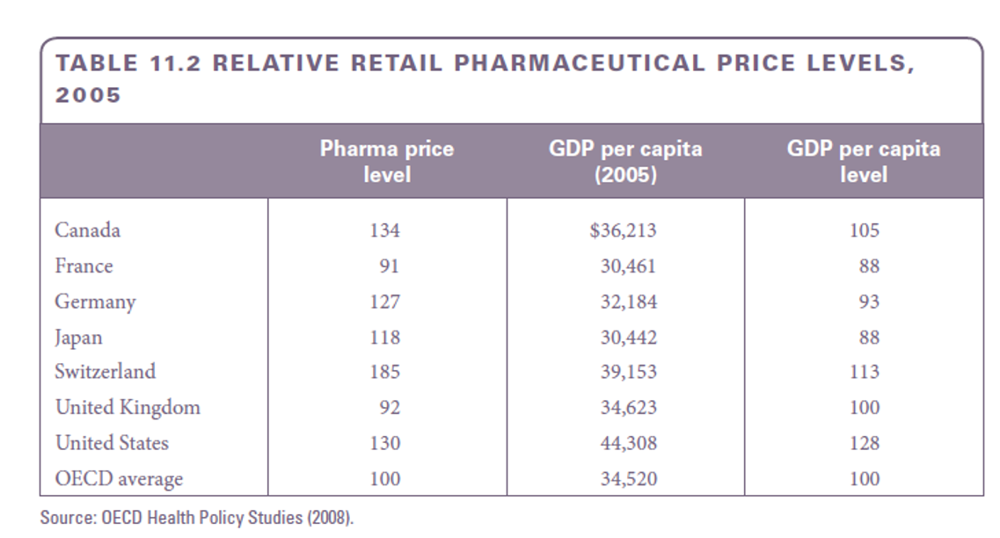
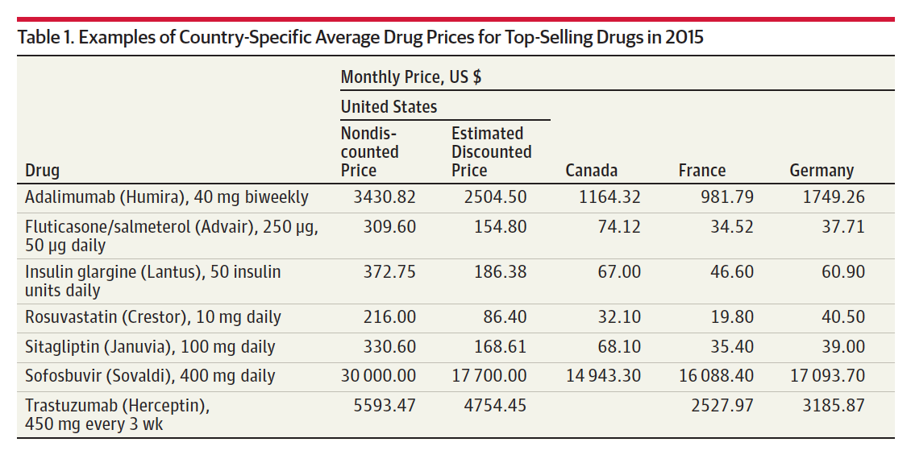

The market for pharmaceuticals
Wu Zeng, MD, PHD
Associate Professor
Department of Global Health
Georgetown University
wz192@georgetown.edu
Claimer: I declares no conflict of interest
Overview
Prescription drugs and the pharmaceutical industry occupy increasingly important places in the health economy
Drug therapies traditionally have supplemented nutrition, sanitation, and medical care as methods for preserving health
Despite these successes, the U.S. pharmaceutical industry has been under intense media and legislative scrutiny.
Pharmaceutical firms are among the largest and most profitable businesses in the United States
Overview continued…
- We will focus on
- The role of pharmaceutical products in the production of health, patient choices of drugs under various insurance schemes, and the effects of technological change on the use of drugs
- Drug pricing issues, including price discrimination by sellers and price regulation by the government
- Pharmaceutical research, the determinants of innovation, and the effects of price regulation on innovation
- Cost containment through use of generic products and other measures
Structure of the pharmaceutical industry
- The U.S. has relied on private sector initiative and market mechanisms for the direction of research and development
- In the pharmaceutical industry, government, private philanthropy and academia intimately involved in new product development
- Government sponsors little applied research towards commercialization of a product
- Government & private philanthropy directly fund basic research to advance knowledge
The size of pharmaceutical industry
- In 2006, spending on prescription drugs amounted to $217 billion or 10.3 percent of national health expenditures, up from 8.9 percent in 2000 and just 4.7 percent in 1980
- With its long history of relatively high profits and rich set of features— patent protection, high research and development spending, intense product promotion, and heavy regulation—the pharmaceutical industry always has drawn the attention of economists in the field of industrial organization.
Top 10 pharmaceutical companies in the world

US spending on prescription drugs vs. other countries

The role of research and development in the pharmaceutical industry
- The pharmaceutical industry is one of the most research-intensive industries in the world, with R&D spending accounting for a significant portion of total revenue.
- The world’s largest pharma firms spent over $500 billion on R&D since 2000, and $51.2 billion in 2014, which is 17.9% of their combined sales of $286 billion.
- 75% of the world’s total R&D spending in pharmaceuticals is based in U.S
- Introduction of new drugs is a major determinant in profitability; the longer a drug is on the market, the lower its return on sales
R&D process
New Drug development: FDA
- Government regulatory body for the industry
- Imposes requirements on product testing, safety, effectiveness, and marketing of pharmaceutical products
- Monitors for proper manufacturing and labeling standards
- Also responsible for food, medical devices, and cosmetics products
- The FDA approval does not mean a product is harmless
New drug application
- FDA reviewer’s key decisions:
- “Whether the drug is safe and effective in its proposed use(s), and whether the benefits of the drug outweigh the risks.
- Whether the drug’s proposed labeling (package insert) is appropriate, and what it should contain. Whether the methods used in manufacturing the drug and the controls used to maintain the drug’s quality are adequate to preserve the drug’s identity, strength, quality, and purity.
Steps in the pharmaceutical R&D process

Policy toward innovation
- US government encourages innovation through patent protection and market exclusivity
- Patent law
- 1984: Drug Price Competition and Patent Term Restoration Act (Hatch-Waxman Act)
- Extended the effective patent life of a drug by 5 years to compensate for time lost during the FDA approval process
- Allowed generic manufacturers to file an abbreviated new drug application (ANDA) to market a generic version of a drug without repeating the costly clinical trial
- Internationally, the World Trade Organization (WTO) requires member countries to provide patent protection for pharmaceutical products for at least 20 years from the date of filing
Impact patient on drug prices
Monopoly pricing through patents
- Patents of drugs distort drug prices, limit treatment options for individuals who do not have the means to pay, and cause American consumers to pay too much for their prescription medicines
- The awarding of a patent provides the innovator with monopoly power – to limit availability and set prices above the marginal cost of production
- The profit-maximizing output occurs where MC equals MR. The monopolist then charges the highest price the market will bear, which is given by the demand curve. If price exceeds average cost a profit will be earned
The impact of insurance on drug prices
- Insurance copayment provisions invite firms with market power to raise their price according to the inverse of the copay
- Insurance shifts demand from D1 to D2 (increases demand)
- User coinsurance rate (c) determines the magnitude of the shift
- 100 percent insurance (c = 0) implies the demand curve is vertical
- The 50 percent copay results in the monopolist doubling their prices
- Price changes from P1 to P2
- Monopolist could adjust the resulting price-quantity point on the new demand curve by moving from initial quantity only if profits increase
Common pricing control policies
- Regulation of mark-ups in the pharmaceutical supply and distribution chain (UK)
- Tax exemptions/reductions for pharmaceutical products
- Application of cost-plus pricing formulae for pharmaceutical price setting or negotiated prices ceiling (Canada)
- Use of external reference pricing (Germany)
- Promotion of use of generic medicines
- Use of health technology assessment
Relative retail pharmaceutical price levels, 2005

Drug prices in different countries
